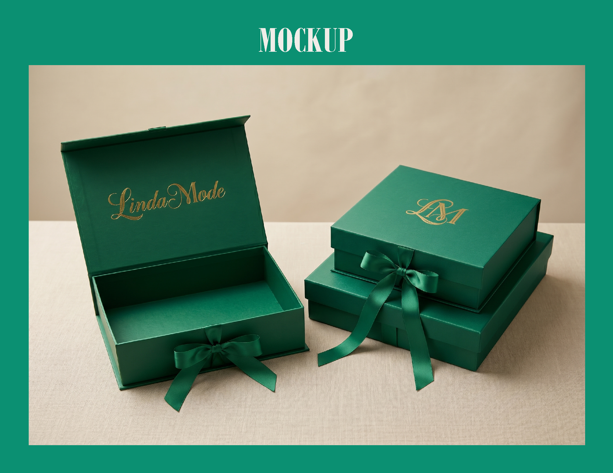

Brand Identity Project

Proyek konsep identitas visual untuk brand lokal dengan fokus pada konsistensi karakter merek.
Proyek konsep identitas visual untuk brand lokal dengan fokus pada konsistensi karakter merek.

Eksperimen logo dengan pendekatan bentuk sederhana, keterbacaan, dan fleksibilitas penggunaan.

Konsep packaging yang menekankan hierarki informasi, identitas merek, dan tampilan yang mudah dikenali.